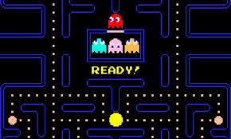
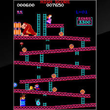
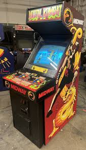
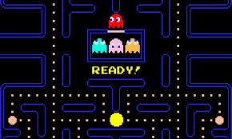
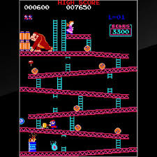
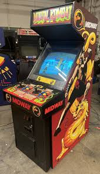

The Early Days
Video games have come a long way since their inception in the 1950s and 1960s. The earliest games, like Tennis for Two (1958) and Spacewar! (1962), were experimental and often played on large, room-sized computers.
- 1950: Claude Shannon wrote about programming a computer to play chess, laying the groundwork for games on computers.
- 1952: OXO (or Noughts and Crosses) was created by Alexander S. Douglas as part of his PhD dissertation, one of the first graphical games.
- 1958: Tennis for Two, created by William Higinbotham, was one of the first games to use a graphical display on an oscilloscope.
- 1961: MIT students, including Steve Russell, developed Spacewar!, a combat game that introduced interactive gameplay and multiplayer combat.
- 1966: Ralph Baer began work on "The Brown Box," the prototype for the first home video game console.
- 1967: The first light gun game was created, a precursor to later shooting games.
- 1971: Computer Space, inspired by Spacewar!, became the first commercially sold video game.
The Arcade Boom
 





The 1970s and 1980s marked the golden age of arcade games. Iconic titles like Pong, Pac-Man, and Donkey Kong became cultural phenomena, shaping the early gaming industry.
- 1971: Computer Space, created by Nolan Bushnell and Ted Dabney, became the first commercially available arcade video game.
- 1972: Atari released Pong, a table tennis simulation game, which became a massive commercial success and solidified video games in popular culture.
- 1978: Space Invaders, developed by Taito, introduced the concept of high scores and became a global sensation.
- 1980: Namco released Pac-Man, which introduced one of the first gaming mascots and became an enduring cultural icon.
- 1981: Nintendo released Donkey Kong, which featured the debut of Mario (then called Jumpman).
- 1982: Tron, inspired by the Disney movie, showcased advanced graphics and became a cult favorite in the arcade gaming community.
- 1983: The "arcade crash" began due to market oversaturation, but iconic games like Dragon's Lair used laserdisc technology to differentiate themselves.
The arcade boom not only established video games as a mainstream entertainment medium but also laid the groundwork for future gaming trends, including competitive gaming and character branding.
The Modern Era

The 1990s to the 2020s saw video games evolve into a dominant cultural and technological medium. Advances in hardware, the rise of 3D graphics, the internet, and groundbreaking franchises transformed gaming into a global industry.
- 1990s: The decade saw the transition to 3D graphics with consoles like the Sony PlayStation and Nintendo 64, while PC gaming thrived with titles like Doom and Quake.
- 1994: The Entertainment Software Rating Board (ESRB) was established to create age-appropriate content ratings for video games.
- 2000s: Online multiplayer became mainstream with the rise of broadband internet. Franchises like World of Warcraft, Call of Duty, and Halo became cultural phenomena.
- 2006: The Nintendo Wii introduced motion-based gaming, expanding the gaming audience to casual players and families.
- 2010s: Indie games like Minecraft and Stardew Valley thrived, while mobile gaming exploded with titles like Angry Birds and Clash of Clans.
- 2017: Nintendo released the Switch, a hybrid console that became a commercial and critical success, revitalizing handheld gaming.
- 2020s: Cloud gaming services like Google Stadia and Xbox Cloud Gaming allowed players to stream games without powerful hardware. Virtual reality (VR) and augmented reality (AR) technologies became more accessible to mainstream audiences.
- 2020: The release of the PlayStation 5 and Xbox Series X/S introduced the next generation of gaming consoles, featuring ray tracing, ultra-fast SSDs, and immersive graphics.
The modern era continues to push the boundaries of technology and creativity, offering players unprecedented levels of interactivity and immersion.